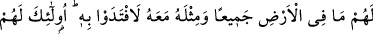
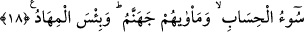

anlayışsız kimseye bir şeyi anlatmanın en iyi yoludur. Alışılmadık bir durumu alışılmış
bir durumla ortaya koymaktır.
Kâşifî der ki: Bazıları âyetteki “su”dan maksadın Kur’an olduğu görüşündedirler ki
Kur’an îman ehlinin gönlünün hayatıdır. “Vâdîler”den maksad gönüldür ki kendi istîdâd
ve kabiliyeti kadar Kur’an’dan feyiz alır. “Köpük”ten maksad nefsin boş düşünceleri ve
şeytanın vesveseleridir.
Ebü’l-Leys ise Tefsir’inde şöyle der: “Burada bâtıl, köpüğe benzetilmiştir. Yâni,
kalbler kendi hevâları ölçüsünde birçok bâtılı yüklenmiştir. Nasıl ki sel her türlü
çerçöpü toplarsa, hevâ da bâtılı yüklenir. Köpüğün ağırlığı olmadığı gibi bâtılın da
hiçbir sevâbı yoktur. Oysa îman ve yakin ehli, tıpkı dünyada saf bir sudan
faydalandıkları gibi âhirette îmanlarından faydalanacaklardır. Küfür ve şüphenin ise ne
dünyada ne de âhirette bir faydası vardır.”
et-Te’vîlâtü’n-Necmiyye’de şöyle der: “O, gökten” kalb semâsından “su” muhabbet
suyu “indirdi de vâdîler” nefis vâdileri “kendi ölçülerince sel olup aktı. Bu sel, üste
çıkan bir köpüğü” yerilen nefsânî ahlâk ve behîmî hayvânî sıfatları “yüklenip
götürdü.”
“O, gökten” ruh semâsından cemâl nurlarının müşâhedelerinin “su”yunu “indirdi
de” kalblerin “vâdiler”i “kendi ölçülerince sel olup aktı. Bu sel, üste çıkan bir
köpüğü” rûhânî benliği “yüklenip götürdü.”
“O, gökten” ceberût semâsından ülûhiyyet sıfatının tecellîsi “su”yunu “indirdi de”
sırların “vâdîler”i “kendi ölçülerince sel olup aktı. Bu sel, üste çıkan bir köpüğü”
mecâzîî varlık köpüğünü “yüklenip götürdü.”
Mesnevî’de şöyle diyor:
Kadîm’in sıfatları tecellî edince
Hâdisin sıfatlarını yakar, mahveder
18. İşte Rablerinin emrine uyanlar için en güzel (mükâfat) vardır. Ona
uymayanlara gelince, eğer yeryüzünde olanların tümü ile bunun yanında bir misli
daha kendilerinin olsa, (kurtulmak için) onu mutlaka feda ederlerdi. İşte hesabın
en kötüsü onlaradır. Varacakları yer de cehennemdir. O ne kötü yataktır!